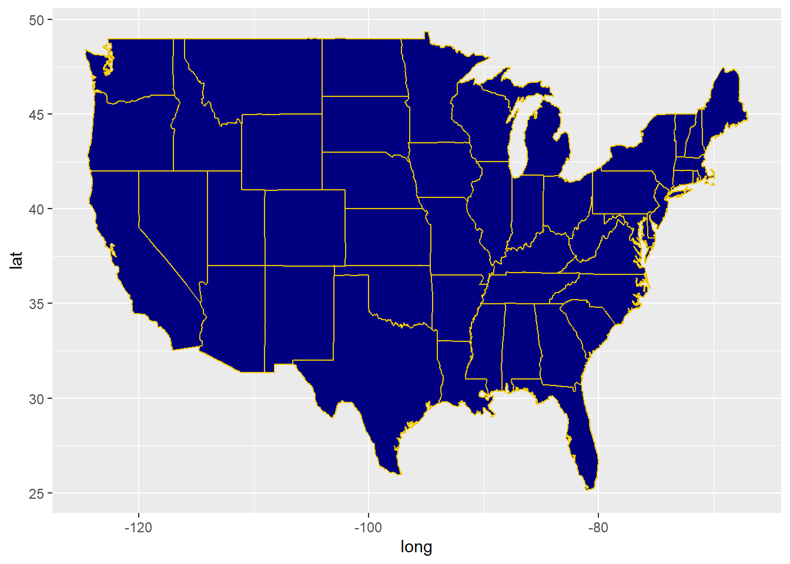
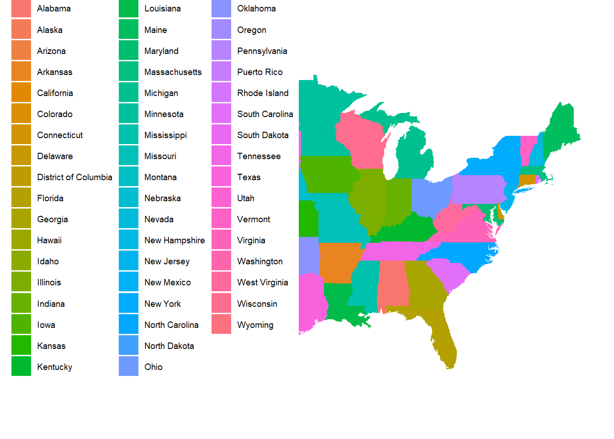

library(tidyverse)
library(maps)
library(mapproj)
library(ggthemes)Maps
Create Original Map
states <- map_data("state")
ggplot(states, aes(x=long, y=lat, group=group)) +
geom_polygon(color="gold2", fill="navyblue")
Warm Up
Edit the code so that each state is a different color.
Hint: what layer should we edit? How will we edit it? You could do this in either the ggplot() function or the geom_polygon() function.
states <- map_data("state")
ggplot(states, aes(x=long, y=lat, group=group)) +
geom_polygon(color="gold2", fill="navyblue")
Activity: ACS data
Load Data
acs_state_data = read_csv("https://raw.githubusercontent.com/stat220kurtz/stat220kurtz.github.io/refs/heads/main/data/acs_state_data_2022_5y.csv")
acs_state_data$state = tolower(acs_state_data$NAME)Variable information:
med_age: median agemed_income: median incomerace_X: estimated population of (self-reported) raceborn_in_state: estimated population who were born in stateX_age_married: average age at first marriage for self-reported male and female respondentshs_diploma,associate_degree,prof_degree, etc.: estimated number with a high school diploma, associate’s degree, professional degree, etc.internet_X: estimated number of people who have internet services
ACS Data Starter Map
Important note: we’re using geom_map as a shortcut here to make a chloropleth map. This saves us the step of encoding the lat/long borders of states, and lets us directly fill the state colors using acs_state_data only. If you’re asked to make a chloropleth map with data that only includes, e.g., state name, use this starter code.
ggplot(acs_state_data) +
geom_map(
aes(map_id = state, fill = NAME),
map = states
) +
expand_limits(x = states$long, y = states$lat) +
coord_map() +
theme_map()
Exercise 1
Comment out the expand_limits line using #. What happened?
Exercise 2
Open up the Data visualization with ggplot2 cheat sheet linked at the Cheatsheets section of the course website (expand the Computing section).
Edit your chloropleth map by:
- Choosing a different variable in
acs_state_datato map tofill - Choosing a different color scale - think about whether a sequential or diverging scale makes more sense for your visual
- Updating the title, and legend title, and any other relevant paramters in
labs()
Exercise 3
If you didn’t already choose a variable that records raw counts in the previous exercise (e.g. race_x), make another map that plots data with raw counts, and proceed to the step below. If you did choose such a variable, further update your map from the previous exercise by:
- Plotting the variable you chose per capita. You can do this by dividing the variable chosen in the previous problem by
total_popdirectly in theaes()function.